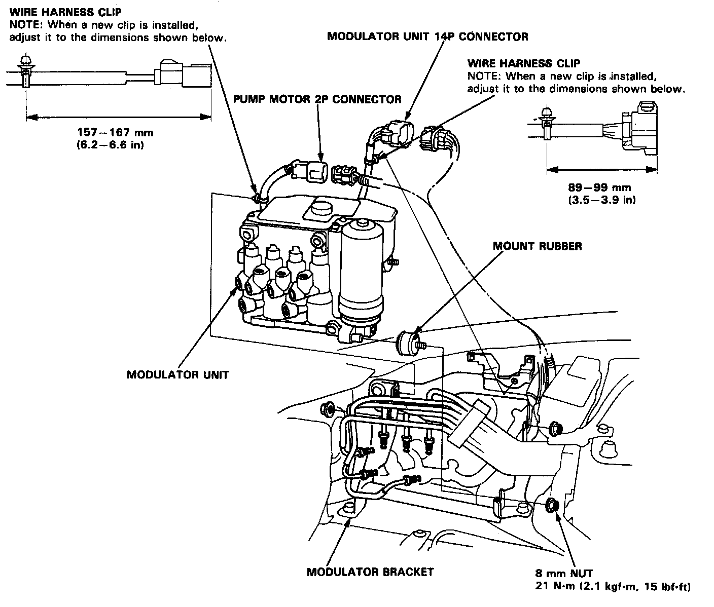
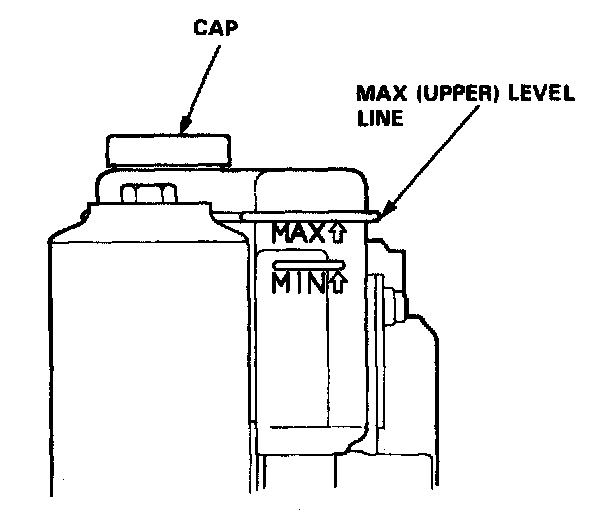
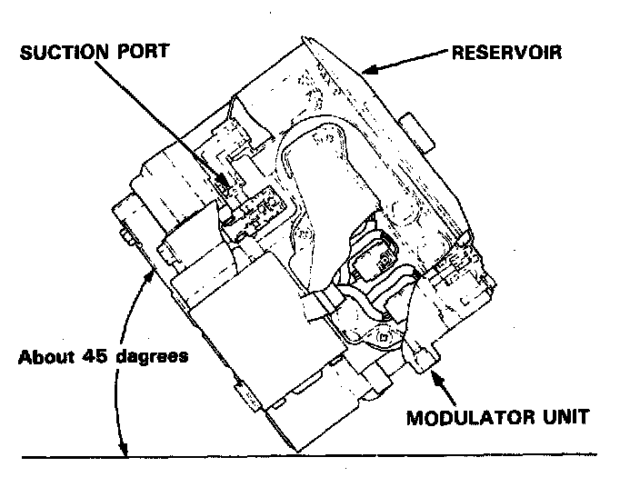
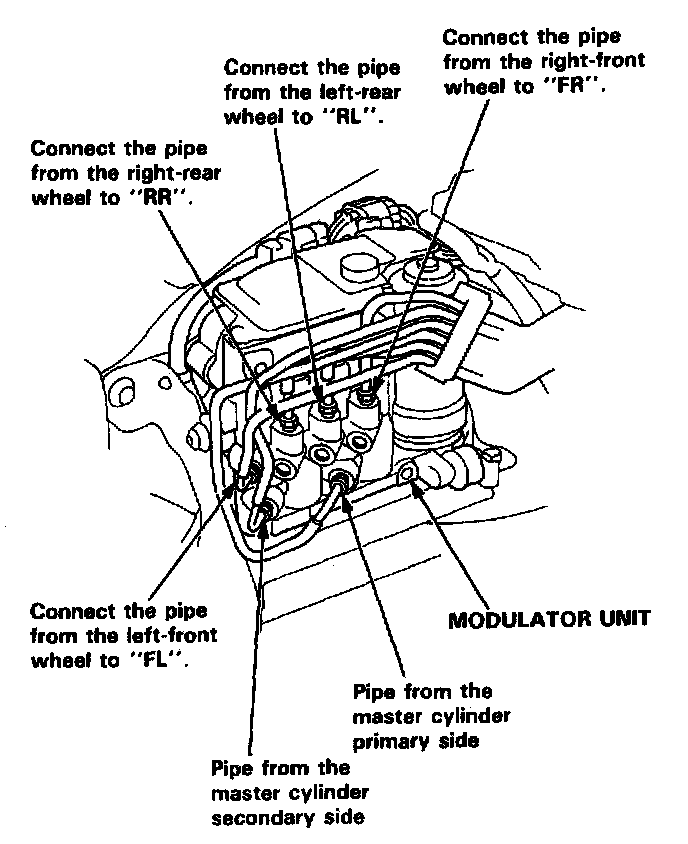

Removal and Installation
Modulator UnitCaution
- When removing the modulator unit or after removing it, be careful not to turn it upside-down or lean it excessively.
- Do not spill brake fluid on the car; it may damage the paint; if brake fluid does contact the paint. wash it off immediately with water.
- Take care not to damage or deform the brake pipes during removal and installation.
- To prevent the brake fluid from flowing, plug and cover the hose ends and joints with a shop towel or equivalent material.
- Do not loosen the relief plug on the accumulator.

Removal:
1. Disconnect the modulator unit 14P connector and pump motor 2P connector.
2. Remove the two wire harness clips from the modulator bracket.
NOTE: When a new harness clip is installed after a wire harness or modulator unit replacement, adjust the harness band to the dimensions shown in image.
3. Remove the three 8 mm nuts, and remove the modulator unit from the bracket.
NOTE: When the pump motor or the modulator unit is replaced, bleed the high-pressure brake fluid first. Service and Repair

Installation:
1. Check whether the brake fluid level in the reservoir is at the MAX (upper) level. If level is low, add fresh brake fluid to the MAX (upper) level.

2. Before installing the modulator unit on the car, be sure to bleed the air from the suction port in the modulator unit by leaning the modulator unit to one aide slowly (about 45 degrees) as shown.
CAUTION: When installing the modulator unit, be careful not to turn it upside-down or lean it excessively.
3. Install the modulator unit in the reverse order of removal.
NOTE: Check the letters stamped on the modulator body, and connect the brake pipes properly. Tighten the flare nuts to 19 N.m (1.9 kgf.m, 14 lbf.ft).

4. Start the engine and let it idle for a minute.
Check that:
- ABS indicator light is off.
- Brake fluid is not leaking from the brake pipe joints.
5. Stop the engine.
6. Check whether the brake fluid level in the reservoir is at the MAX (upper) level. If the level is low, add fresh fluid until the reservoir is refilled to the MAX (upper) level.
7. Bleed air from the brake system. Bleeding Procedures
8. Check the ABS function using the ALB checker.